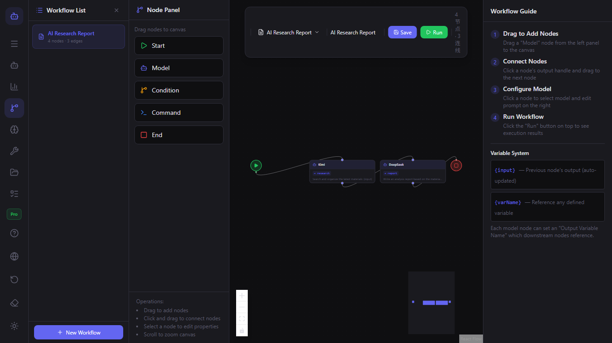
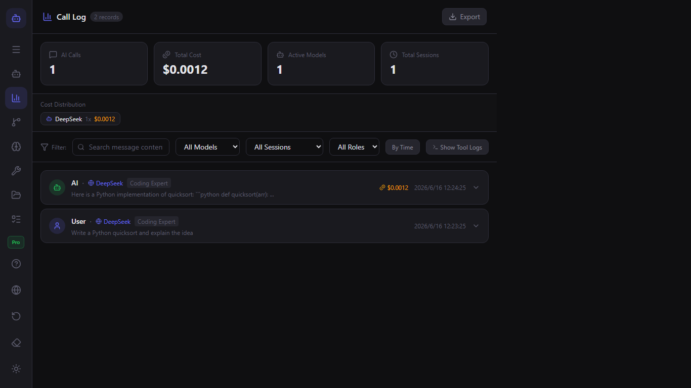

ModelFlow User Guide
Welcome to ModelFlow. This guide covers everything from your first launch to advanced multi-model workflows.
Quick Start
- Download ModelFlow from the Microsoft Store.
- Open the app and complete the onboarding.
- Add your first model in the Model Manager.
- Start a chat and type
@model-nameto switch models.
Model Management
Use the Model Manager to add text, image, video, and audio models. For each model you can set the provider, API key, role, context window, and cost limits.

Chat & @ Mentions
Type @ followed by a model name to route the next reply to that model. You can chain multiple models in the same conversation.

Workflows
Open the Workflow Editor to build visual pipelines. Drag model nodes, condition nodes, and command nodes onto the canvas, then connect them.

Plugins
ModelFlow supports verified plugins and community plugins. Install plugins from the Plugin Manager or build your own.

Local CLI & Tools
Models can run local commands, read files, and list directories. Type /tool in chat or add a Command Node to a workflow.

Call Log & Cost
The Call Log tracks every AI call, tool execution, token usage, and estimated cost. Export logs for analysis.

Settings & Privacy
ModelFlow is local-first. Your sessions, model configs, and plugins are stored on your machine. Change language, workspace, and export data in Settings.